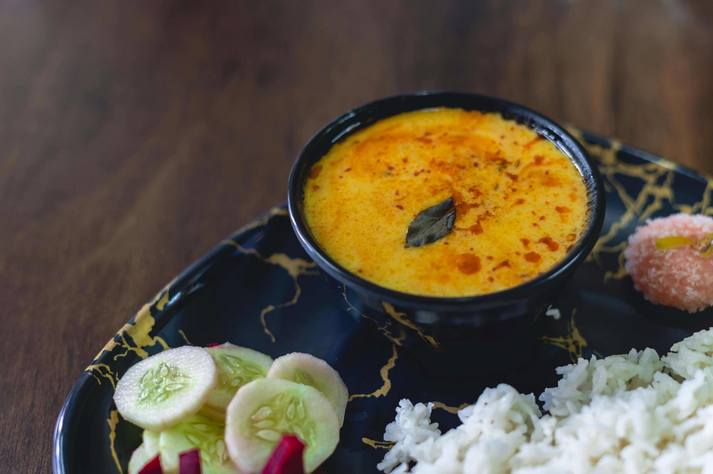

Daal
Description
This nourishing dish requires little effort, and tastes great on cold winter evenings.
Ingredients
- One large mug of red lentils
- Enough olive oil to generously cover a small pan
- Six cloves of garlic, roughly chopped
- A thumb sized piece of ginger, roughly chopeed
- Three green chillis, thinly sliced
- A generous pinch of cumin seeds
- One generous teaspoon of salt
- One heaped teaspoon of turmeric
- One level teaspoon of chilli powder
- A pinch of paprika
- A handful of coriander, roughly chopped (and a generous pinch for garnishing)
Steps
- Add the lentils to the pan and add enough boiling water so that it's covered by a few inches
- Add the spices, but not the cumin seeds, and stir the mixture every 5 minutes
- In a smaller pan, add the olive oil, the garlic and ginger.
- Fry until they turn light brown, then add the cumin seeds and green chillis
- When this mixture turns golden brown, turn the heat off.
- It will take 45 minutes - 1 hour for the lentils to become cooked well enough
- If you would like a thinner daal, add boiling water.
- Once you're satisfied with the consistency, add the fried mixture and stir through.
- Add the chopped coriander and stir through.
- Serve into a bowl and garnish with some whole coriander leaves.